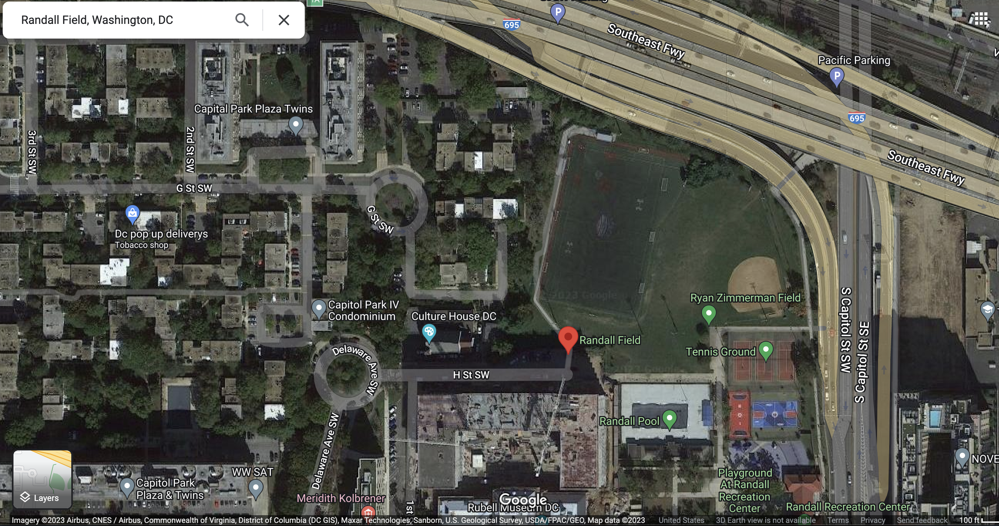

Randall Field - Washington, D.C.
Located at South Capitol & I streets is beautiful Randall Field! This field is located in the Navy Yard neighborhood and features something for everyone. For ultimate players, this complex has both a turf field and a grass field. With field lights that are on until after 10 PM, you can play all night.
